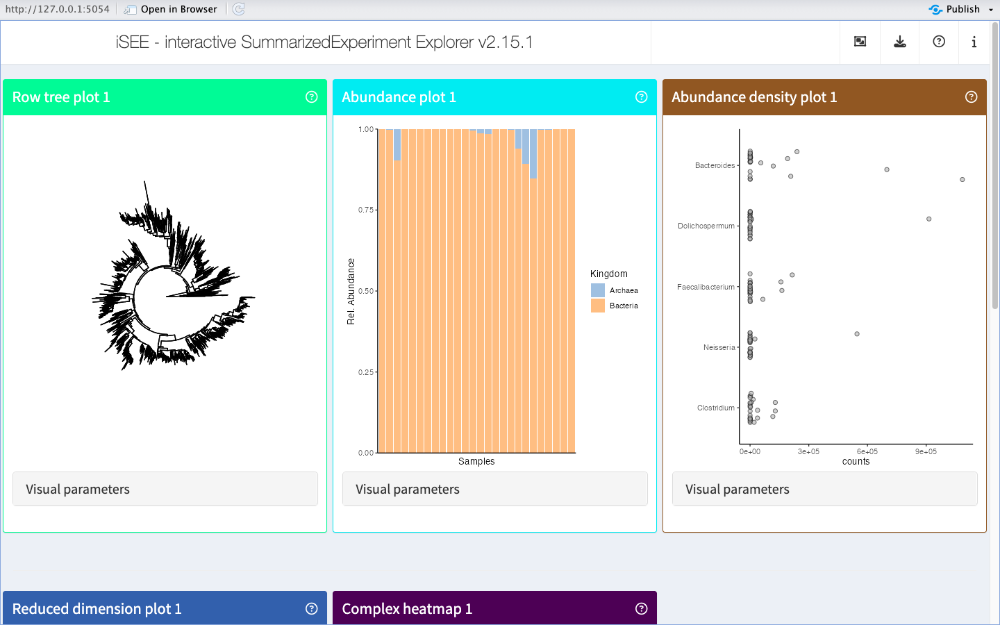

vignettes/iSEEtree.Rmd
iSEEtree.RmdR is an open-source statistical environment which can be easily modified to enhance its functionality via packages. iSEEtree is an R package currently available on GitHub. In the future, it may be submitted to the Bioconductor repository for packages. R can be installed on any operating system from CRAN after which you can install iSEEtree by using the following commands in your R session:
remotes::install_github("RiboRings/iSEEtree")iSEEtree is based on many other packages and in particular on those that have implemented the infrastructure needed for dealing with omics data, microbiome data and interactive visualisation. That is, packages like SummarizedExperiment, TreeSummarizedExperiment, mia, iSEE and shiny.
If you are asking yourself the question “Where do I start using Bioconductor?” you might be interested in this blog post.
As package developers, we try to explain clearly how to use our packages and in which order to use the functions. But R and Bioconductor have a steep learning curve so it is critical to learn where to ask for help. The blog post quoted above mentions some but we would like to highlight the Bioconductor support site as the main resource for getting help: remember to use the iSEEtree tag and check the older posts. Other alternatives are available such as creating GitHub issues and tweeting. However, please note that if you want to receive help you should adhere to the posting guidelines. It is particularly critical that you provide a small reproducible example and your session information so package developers can track down the source of the error.
We hope that iSEEtree will be useful for your research. Please use the following information to cite the package and the overall approach. Thank you!
## Citation info
citation("iSEEtree")
#> Warning in citation("iSEEtree"): could not determine year for 'iSEEtree' from
#> package DESCRIPTION file
#> To cite package 'iSEEtree' in publications use:
#>
#> Benedetti G (????). _iSEEtree: Interactive visualisation for
#> microbiome data_. R package version 0.1.3,
#> <https://github.com/RiboRings/iSEEtree>.
#>
#> A BibTeX entry for LaTeX users is
#>
#> @Manual{,
#> title = {iSEEtree: Interactive visualisation for microbiome data},
#> author = {Giulio Benedetti},
#> note = {R package version 0.1.3},
#> url = {https://github.com/RiboRings/iSEEtree},
#> }
library(iSEEtree)
library(mia)
# Import TreeSE
data("GlobalPatterns", package = "mia")
tse <- GlobalPatterns
# Agglomerate TreeSE by Genus
tse_genus <- mergeFeaturesByRank(tse,
rank = "Genus",
onRankOnly = TRUE)
# Add relabundance assay
tse_genus <- transformAssay(tse_genus, method = "relabundance")
# Add PCA
tse_genus <- scater::runPCA(tse_genus, assay.type = "counts")
# Launch iSEE
if (interactive()) {
iSEE(tse_genus)
}
iSEEtree was made possible thanks to:
This package was developed using usethis.
Code for creating the vignette.
## Create the vignette
library(rmarkdown)
system.time(render("iSEEtree.Rmd", "BiocStyle::html_document"))
## Extract the R code
library(knitr)
knit("iSEEtree.Rmd", tangle = TRUE)Date the vignette was generated.
#> [1] "2024-05-03 18:06:45 UTC"Wallclock time spent generating the vignette.
#> Time difference of 11.783 secsR session information.
#> R version 4.4.0 Patched (2024-04-24 r86483)
#> Platform: x86_64-pc-linux-gnu
#> Running under: Ubuntu 22.04.4 LTS
#>
#> Matrix products: default
#> BLAS: /usr/lib/x86_64-linux-gnu/openblas-pthread/libblas.so.3
#> LAPACK: /usr/lib/x86_64-linux-gnu/openblas-pthread/libopenblasp-r0.3.20.so; LAPACK version 3.10.0
#>
#> locale:
#> [1] LC_CTYPE=en_US.UTF-8 LC_NUMERIC=C LC_TIME=en_US.UTF-8 LC_COLLATE=en_US.UTF-8
#> [5] LC_MONETARY=en_US.UTF-8 LC_MESSAGES=en_US.UTF-8 LC_PAPER=en_US.UTF-8 LC_NAME=C
#> [9] LC_ADDRESS=C LC_TELEPHONE=C LC_MEASUREMENT=en_US.UTF-8 LC_IDENTIFICATION=C
#>
#> time zone: UTC
#> tzcode source: system (glibc)
#>
#> attached base packages:
#> [1] stats4 stats graphics grDevices utils datasets methods base
#>
#> other attached packages:
#> [1] mia_1.11.13 MultiAssayExperiment_1.29.2 TreeSummarizedExperiment_2.11.0
#> [4] Biostrings_2.71.6 XVector_0.43.1 iSEEtree_0.1.3
#> [7] iSEE_2.15.1 SingleCellExperiment_1.25.1 SummarizedExperiment_1.33.3
#> [10] Biobase_2.63.1 GenomicRanges_1.55.4 GenomeInfoDb_1.39.14
#> [13] IRanges_2.37.1 S4Vectors_0.41.7 BiocGenerics_0.49.1
#> [16] MatrixGenerics_1.15.1 matrixStats_1.3.0 RefManageR_1.4.0
#> [19] BiocStyle_2.31.0
#>
#> loaded via a namespace (and not attached):
#> [1] splines_4.4.0 later_1.3.2 ggplotify_0.1.2 tibble_3.2.1
#> [5] polyclip_1.10-6 DirichletMultinomial_1.45.0 lifecycle_1.0.4 pwalign_0.99.2
#> [9] doParallel_1.0.17 miaViz_1.11.2 lattice_0.22-6 MASS_7.3-60.2
#> [13] backports_1.4.1 magrittr_2.0.3 sass_0.4.9 rmarkdown_2.26
#> [17] jquerylib_0.1.4 yaml_2.3.8 httpuv_1.6.15 DBI_1.2.2
#> [21] RColorBrewer_1.1-3 lubridate_1.9.3 abind_1.4-5 zlibbioc_1.49.3
#> [25] purrr_1.0.2 ggraph_2.2.1 yulab.utils_0.1.4 tweenr_2.0.3
#> [29] circlize_0.4.16 GenomeInfoDbData_1.2.12 ggrepel_0.9.5 irlba_2.3.5.1
#> [33] tidytree_0.4.6 vegan_2.6-4 pkgdown_2.0.9 permute_0.9-7
#> [37] DelayedMatrixStats_1.25.4 codetools_0.2-20 DelayedArray_0.29.9 DT_0.33
#> [41] scuttle_1.13.1 xml2_1.3.6 ggforce_0.4.2 tidyselect_1.2.1
#> [45] shape_1.4.6.1 aplot_0.2.2 UCSC.utils_0.99.7 farver_2.1.1
#> [49] ScaledMatrix_1.11.1 viridis_0.6.5 shinyWidgets_0.8.6 jsonlite_1.8.8
#> [53] GetoptLong_1.0.5 BiocNeighbors_1.21.2 decontam_1.23.0 tidygraph_1.3.1
#> [57] scater_1.31.2 iterators_1.0.14 systemfonts_1.0.6 foreach_1.5.2
#> [61] tools_4.4.0 ggnewscale_0.4.10 treeio_1.27.1 ragg_1.3.0
#> [65] Rcpp_1.0.12 glue_1.7.0 gridExtra_2.3 SparseArray_1.3.7
#> [69] xfun_0.43 mgcv_1.9-1 dplyr_1.1.4 shinydashboard_0.7.2
#> [73] withr_3.0.0 BiocManager_1.30.22 fastmap_1.1.1 bluster_1.13.0
#> [77] fansi_1.0.6 shinyjs_2.1.0 digest_0.6.35 rsvd_1.0.5
#> [81] gridGraphics_0.5-1 timechange_0.3.0 R6_2.5.1 mime_0.12
#> [85] textshaping_0.3.7 colorspace_2.1-0 listviewer_4.0.0 utf8_1.2.4
#> [89] tidyr_1.3.1 generics_0.1.3 DECIPHER_2.99.2 graphlayouts_1.1.1
#> [93] httr_1.4.7 htmlwidgets_1.6.4 S4Arrays_1.3.7 pkgconfig_2.0.3
#> [97] gtable_0.3.5 ComplexHeatmap_2.19.0 htmltools_0.5.8.1 bookdown_0.39
#> [101] rintrojs_0.3.4 clue_0.3-65 scales_1.3.0 png_0.1-8
#> [105] ggfun_0.1.4 knitr_1.46 reshape2_1.4.4 rjson_0.2.21
#> [109] nlme_3.1-164 shinyAce_0.4.2 cachem_1.0.8 GlobalOptions_0.1.2
#> [113] stringr_1.5.1 parallel_4.4.0 miniUI_0.1.1.1 vipor_0.4.7
#> [117] desc_1.4.3 pillar_1.9.0 grid_4.4.0 vctrs_0.6.5
#> [121] promises_1.3.0 BiocSingular_1.19.0 beachmat_2.19.4 xtable_1.8-4
#> [125] cluster_2.1.6 beeswarm_0.4.0 evaluate_0.23 cli_3.6.2
#> [129] compiler_4.4.0 rlang_1.1.3 crayon_1.5.2 plyr_1.8.9
#> [133] fs_1.6.4 ggbeeswarm_0.7.2 stringi_1.8.3 viridisLite_0.4.2
#> [137] BiocParallel_1.37.1 munsell_0.5.1 lazyeval_0.2.2 colourpicker_1.3.0
#> [141] Matrix_1.7-0 patchwork_1.2.0 sparseMatrixStats_1.15.1 ggplot2_3.5.1
#> [145] shiny_1.8.1.1 highr_0.10 igraph_2.0.3 memoise_2.0.1
#> [149] bslib_0.7.0 ggtree_3.11.2 bibtex_0.5.1 ape_5.8This vignette was generated using BiocStyle (Oleś, 2023) with knitr (Xie, 2024) and rmarkdown (Allaire, Xie, Dervieux et al., 2024) running behind the scenes. Citations were generated with RefManageR (McLean, 2017).
[1] J. Allaire, Y. Xie, C. Dervieux, et al. rmarkdown: Dynamic Documents for R. R package version 2.26. 2024. URL: https://github.com/rstudio/rmarkdown.
[2] M. W. McLean. “RefManageR: Import and Manage BibTeX and BibLaTeX References in R”. In: The Journal of Open Source Software (2017). DOI: 10.21105/joss.00338.
[3] A. Oleś. BiocStyle: Standard styles for vignettes and other Bioconductor documents. R package version 2.31.0. 2023. DOI: 10.18129/B9.bioc.BiocStyle. URL: https://bioconductor.org/packages/BiocStyle.
[4] R Core Team. R: A Language and Environment for Statistical Computing. R Foundation for Statistical Computing. Vienna, Austria, 2024. URL: https://www.R-project.org/.
[5] H. Wickham. “testthat: Get Started with Testing”. In: The R Journal 3 (2011), pp. 5–10. URL: https://journal.r-project.org/archive/2011-1/RJournal_2011-1_Wickham.pdf.
[6] Y. Xie. knitr: A General-Purpose Package for Dynamic Report Generation in R. R package version 1.46. 2024. URL: https://yihui.org/knitr/.